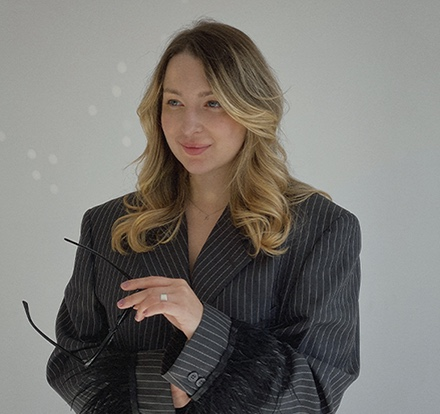
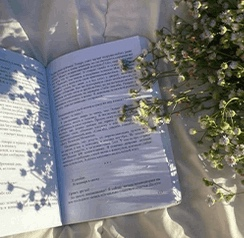
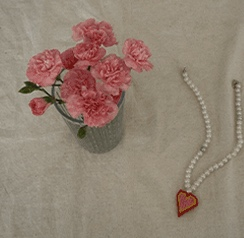
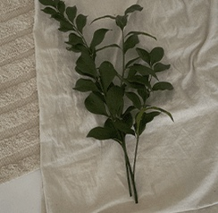

психологпсихоаналитик
Daria Shpilevskaia

- Отношения с собой
- Самоценность
- Психоаналитическая терапия
Ты заслуживаешь любви и заботы особенно от себя
01 запросы
С какими запросами ты работаешь?
Я не работаю с алкогольной и наркотической зависимостями, но могу помочь с:
- Токсичный стыд, неуверенность в себе, чувство недостаточности
- Постоянное сравнение себя с другими не в свою пользу
- Зависимость от мнения родителей и окружающих
- Отсутствие личных границ
- Низкая самооценка и самоценность
- Синдром самозванца
- Проблемы в романтических отношениях
- Негативные отношения с деньгами
- Непонимание «кем хочу стать, когда вырасту»
- Нет баланса между работой и отдыхом
- Отсутствие мотивации что-то делать
- Множественные страхи и травмы
- Негативные установки родом из детства
02 терапия
В каком подходе ты работаешь?
Я работаю в психоаналитически-ориентированном подходе.
Но не стоит пугаться: это не про холодного аналитика, кушетку и посещения 3 раза в неделю, это про глубину и работу с личностными изменениями. Я не навязываю свое собственное мнение, а мягко, поддерживающе и учитывая особенности и уникальность каждого человека, подвожу клиента к его собственному решению.
Как проходит первая встреча?
Первая встреча больше ознакомительная, чтобы мы с вами поняли, могу ли я удовлетворить ваш запрос и взять вас в работу. Вы рассказываете о вашем запросе, я буду задавать уточняющие вопросы, чтобы лучше вас понять, обговорим ваши ожидания от терапии, а я расскажу, чем могу помочь.
- сессия
- 60 минут
- стоимость
- 9 000 ₽ / 115 $
- формат
- онлайн, zoom
- частота
- раз в неделю
Я рекомендую посещать раз в неделю для достижения лучшего результата и 60 минут нам хватит, чтобы работа была эффективной.



лист ожидания
Запись в лист ожидания
К сожалению, сейчас у меня нет мест в личную терапию, но вы можете заполнить анкету, и я с вами свяжусь, как только место освободится.
Заполнить анкету